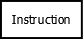

Quand vous faites un programme, surtout s'il est complexe, il est toujours bon de savoir comment va se dérouler son exécution avant de commencer à programmer. D'ailleurs, dans certains programmes, c'est essentiel, pour plusieurs raisons :
La détection et le traitement des erreurs ;
Les structures de contrôle entrainant de longues conséquences sur votre programme ;
L'organisation des tâches pendant la création d'un programme en équipe ;
Etc.
C'est pour cela que nous devons trouver des moyens pour modéliser toutes ces actions. Il existe plusieurs moyens, mais celui qui est le plus répandu est l'organigramme de programmation, aussi appelé logigramme ou algorigramme. Il est bien entendu que pour suivre ce tutoriel qui va vous les présenter, il faut avoir des bases en programmation mais dans N'IMPORTE QUEL LANGAGE ! En effet, avec les logigrammes, vous pourrez créer des schémas sans se soucier du langage de programmation que vous allez utiliser. Si ce n'est pas intéressant ! ;)
Imaginez que vous codiez un programme permettant d'utiliser des distributeurs automatiques avec des cartes bancaires (logique). Vous avez beaucoup de choix, mais vous souhaitez obtenir quelque chose de simple. Avant de vous lancer dans la création de votre programme, vous allez devoir réfléchir, car imaginez que vous vous trompiez, les conséquences pourraient être désastreuses (surtout dans notre exemple). La création d'un logigramme permet de représenter l'exécution du programme précisément, en cherchant toutes les erreurs qui pourront subvenir.
Structures de contrôles complexes
Maintenant, imaginez un programme beaucoup plus simple, une calculatrice. La calculatrice va faire différents types de calculs selon ce qu'on lui a demandé. On va donc utiliser les structures de contrôles conditionnelles. Jusque là, ça va. Imaginez maintenant d'instaurer un système permettant de faire plusieurs calculs à la suite, comme : 17 + 57 imes 58 - 60 Vous n'allez pas pouvoir les faire dans n'importe quel ordre, car nous commençons par effectuer la multiplication, puis l'addition avant d'attaquer à la soustraction. Ce sont les règles de calculs de bases. Vous allez devoir utiliser des structures de contrôles conditionnelles complexes, mais aussi utiliser les boucles, pour enchainer les différents calculs. Vous devriez mieux dans ces cas là, tout mettre à plat et réfléchir avant de coder.
Organisation
Troisième cas, l'organisation. Par exemple imaginez que vous faites un jeu vidéo complet, en 3D et tout le bazar. Imaginez maintenant que ce jeu inclut des parties multijoueurs, fonctionnant bien sûr avec le réseau. Vous allez devoir traiter les informations et les envoyer sur le réseau, sans doute sur un serveur, mais je ne vais pas traiter tous les détails. Étant donné que c'est un jeu complexe, vous décidez d'avoir une équipe et tout le monde est présent. Vous êtes trois développeurs et vous vous organisez les tâches :
L'un fait le réseau
L'autre fait le système de jeu de base (collisions, mouvement de personnage)
Le dernier inclut tous les modèles.
Essayez de comprendre comme ça va marcher. L'un inclut tous les modèles, et une fois qu'ils sont présents, l'autre fait son job. Et enfin, une fois que l'autre a inclut toutes les fonctions et méthodes, l'autre peut faire le réseau. Vous ne voyez pas le problème ? Vous êtes mal organisés ! Il faut que l'un ait fini pour que l'autre puisse finir son job ! Pour mieux se répartir les tâches, tout mettre sur un schéma et regarder comment ils peuvent être indépendants, et à la fin juste rassembler les bouts.
Ce sont les principales raisons pour faire un logigramme. Il en existe d'autres bien sûr. Si j'ai un conseil à vous donner pour l'instant, c'est que dès que vous sentez que votre programme est complexe, ou que vous êtes plusieurs, faites un organigramme de programmation (logigramme, algorigramme) !
La norme ISO
Maintenant, le tutoriel va respecter la norme ISO 5807, et si vous suivez mes instructions, vos schémas vont la respecter.
Pourquoi existe t-il une norme ?
Une norme est le meilleur moyen pour un système quelconque d'être normalisé (en même temps, c'est juste un peu la définition). Le réel avantage qu'apporte une norme est la compréhension par tous. Imaginez par exemple un schéma représentant un circuit électrique.
Image prise dans le tutoriel sur l'électronique sous licence CC-BY-NC-SA (Auteurs : olyte ,uknow et Basil1402) Si vous avez des bases en électricité, vous comprendrez TOUS la même chose, car ce schéma est normalisé. Maintenant, remplacez le générateur par un rectangle, et les dipôles ohmiques par des cercles. Vous vous comprendrez votre schéma, mais les autres non. Ce schéma représente encore un aspect du respect d'une norme, les lettres ! Un petit rappel pour ceux qui dorment au fond de la classe :
Lettre
Signification
U
Tension
I
Intensité
S'il n'y avait pas de norme, j'aurai pu croire le contraire ! Mais comme la norme dit que c'est comme ça, j'applique et ça me permet de comprendre. Encore une fois, si j'avais fait le contraire, je me serai compris, mais personne d'autre n'aurait pu en faire autant...
Souvenez vous : Si un schéma respecte une norme, il est compris de la même manière par tous ceux qui la connaisse.
La norme ISO 5807
Parlons-en un peu. Cette norme permet de normaliser les logigrammes. Vous n'êtes pas obligé de la respecter, mais c'est à vos risques et périls. Quand vous faites un schéma sur un logiciel adapté, vous pouvez respecter la norme en disant que vous faites un schéma Flowchart (c'est la traduction d'organigramme en fait...). C'est sous cette option que vous pourrez faire vos organigrammes respectant la norme.
Informations supplémentaires avant de commencer
Exemple d'un logigramme
Le premier rôle d'un logigramme est de représenter un algorithme, et comme tout algorithme, il y a un début et une fin, enfin en général. C'est pareil en informatique et plus particulièrement en programmation : un programme débute par son appel à l'exécution, et se termine par sa fermeture. Donc ne vous étonnez pas qu'il y ait un début et une fin. Voici un algorigramme normalisé très simple :
Quand vous aurez appris comment ça fonctionne, vous comprendrez ceci :
PROGRAMME DEBUT
{
ENTREE_CONSOLE _variable_ Nom_Utilisateur
_variable_ Nb_Lettres = compteLettres->_Nom_Utilisateur
SI (Nb_Lettres > 10)
SORTIE_CONSOLE "Votre nom est long"
SINON
SORTIE_CONSOLE "Votre nom est court"
}
FIN
Toute personne connaissant la norme ISO devrait comprendre la même chose, au mot près. Comme vous pouvez voir, un algorigramme sert vraiment à représenter un algorithme. Vous pouvez grâce à eux visualiser graphiquement l'application que vous devez ou allez coder, ou en tout cas l'algorithme correspondant.
Vous l'avez compris, un algorigramme est une suite de figures signifiant quelque chose, et contenant du texte pour préciser. Nos figures ne se mettent pas n'importe où, n'importe comment, dans n'importe quel ordre. Nous devons avoir un algorithme correct et structuré. Tout d'abord, on le sait déjà, il faut placer toutes nos formes entre le début et la fin, représentés par des rectangles arrondis sur les coins.
Voici deux règles assez importantes :
Un algorithme est correct s'il commence par un rectangle arrondi "Début" et finit par un rectangle arrondi "Fin".
Il ne peut pas y avoir deux débuts dans le même algorithme, mais il peut y avoir plusieurs fins (dans le cas d'un bug entraînant la fin du programme par exemple).
Maintenant, essayons de voir quelles sont justement les figures qui peuvent exister dans un organigramme. ;)
Les instructions
Comme vous devez le savoir, un programme n'est qu'une suite d'instructions. Ces instructions permettent de réaliser différents traitements, comme des calculs, des comparaisons etc.
Vous savez que vous devrez mettre vos figures entre le début et la fin de l'algorithme seulement. Je vais vous donner une petite astuce pour mieux démarrer. Quand vous créez vos organigrammes, faites comme si vous codiez les programmes que vous être en train de modéliser. Donc, ne mettez pas la fin en premier ou en deuxième, mais en dernier (à part s'il y a plusieurs fin).
Une instruction se représente par un rectangle simple.

Les liaisons
Non, pas les liaisons amoureuses ! Je parle des liaisons que nous pouvons voir sur les schémas, qui relient nos figures entre elles. En général, nous plaçons des flèches dans le sens de l’exécution du programme pour permettre en effet de bien voir le déroulement de l'algorithme en question, et ainsi se repérer facilement (par conséquent une compréhension plus simple). Par exemple, prenez le logigramme suivant :
C'est un bout de logigramme, donc vous ne pouvez pas voir le début et la fin de l'algorithme. Imaginez tout un logigramme complexe derrière. Ce qui vous intéresse, ce sont les flèches. En effet, grâce à elles, vous pouvez déterminer le sens de l’exécution du programme. Vous voyez bien que c'est comme la plupart des algorigrammes, nous partons du haut puis nous descendons vers le bas.
Maintenant, imaginez autre chose, que nous remplaçons les flèches par des droites simples, comme il est le cas dans beaucoup de schémas.
Je vais vous donner un conseil pour vous repérer : Mettez toujours des flèches dans le sens de l'exécution de votre programme pour relier vos instructions.
Entraînez-vous un peu, en modélisant des programmes très simples. Et sachez qu'avant tout, un algorigramme se fait sur papier, puis si besoin sur un ordinateur (dans le cas d'un cahier des charges en équipe par exemple). Par contre, vous ne pouvez pas tout de suite gérer les entrées et les sorties (comme un affichage ou une entrée de texte dans une console via un clavier), car vous n'utiliserez pas les mêmes figures. Pour savoir comment les modéliser, lisez la prochaine partie. ^^
Qui pourrait faire aujourd'hui un programme complet sans les entrées et les sorties ?
Généralités
Dans vos logigrammes, il faudra aussi mettre les entrées et sorties, même écrire du simple texte dans la console doit être marqué ! En avant pour une partie bien simple.
En premier lieu, la figure à utiliser pour les entrées et sorties est un parallélogramme classique. Grâce à lui, nous pouvons repérer et modéliser les entrées, les sorties, les lectures et les écritures (dans des fichiers ou des bases de données par exemple).
C'est vraiment très simple, la seule chose qui change avec les instructions classiques est sa forme. Un petit exemple pour la route...
Il est important de mettre si c'est une impression, un affichage ou bien une entrée. Vous le verrez dans le prochain mini-TP.
Spécificités
Il arrive parfois qu'il faille être très précis dans ce que nous mettons dans nos algorigrammes, je vais utiliser l'exemple de l'utilisation d'une manette (entrée) et d'une imprimante (sortie). Il faut indiquer les périphériques utilisés dans des figures à part, des ovales. Ensuite, nous indiquons une flèche qui part de l'ovale et qui se dirige vers l'entrée ou la sortie. Je pense que ce serait plus clair pour vous avec un schéma à analyser.
J'ai instauré deux types de flèches pour faciliter votre compréhension, mais vous pouvez aussi les mettre dans vos futurs schémas. ;) Analysons, quand vous faites subir mille sévices à votre manette, l'information part de la manette puis se dirige vers l'ordinateur (pour simplifier). Du coup, nous mettons de préférence une flèche de la manette vers l'entrée, comme vous pouvez voir sur le schéma ci-dessus.
Au contraire, quand vous faites une sortie, par exemple pour une impression, l'information part de votre ordinateur vers votre imprimante, donc nous mettons une flèche de la source de la sortie vers l'imprimante, encore une fois comme sur le schéma ci-dessus. En général, les périphériques d'entrées sont placés à gauche, et les périphériques de sortie à droite.
Voici un schéma pour retenir un peu tout ça (images prises sur iconfinder) :
TP : Un simple programme...
Cahier des charges
Quand nous apprenons à programmer, nous sommes souvent confrontés à un programme très simple, qui consiste à avoir une variable (ou objet selon les langages) de type "chaîne de caractères", et de demander à l'utilisateur à rentrer son nom, et de l'afficher. C'est un programme très simple à modéliser où je ne vais vous donner qu'un exemple d'exécution, pour bien que vous pensez à tout. ;)
Veuillez rentrer votre nom :
Programpriv
Votre nom est Programpriv.
Vous affichez par défaut avec votre écran, et vous rentrez le texte au clavier, donc vous n'avez pas besoin d'user des spécificités.
Correction
Terminus, tout le monde descend arrête ! Vous n'avez pas fini ? Ah bon, et bien terminez ! :pirate: Bon, maintenant que vous avez terminé, je vais vous expliquer presque toutes les étapes, donc vous êtes en mesure de faire le schéma en même temps que moi. Toutefois, je vous donnerai le logigramme final pour que vous vous vérifiiez. Ne regardez la solution que quand vous avez fini, en effet, comme en programmation, il est important de savoir s'entraîner seul.
En premier, mettez le bloc du début, mais pas celui de la fin. Ensuite, il faut réfléchir à ce que votre programme va utiliser comme variable, c'est à dire une chaîne de caractère. Mettez comme si c'était une variable simple, je vais la nommer : Nom_Utilisateur. Nous aurons maintenant 3 entrées et sorties à la suite.
Sortie : affichage de la phrase "Veuillez rentrer votre nom : ".
Entrée : entrée du nom de l'utilisateur dans la variable Nom_Utilisateur.
Sortie : affichage du nom de l'utilisateur avec comme phrase introductive : "Votre nom est".
Enfin, il vous faudra mettre les liaisons. Voici ce que vous devriez obtenir :
J'ai la petite habitude de mettre dans les sorties "Affichage :" ou autre chose comme "Impression :" au début pour les distinguer des entrées, auxquelles je ne mets que le nom de la variable. Je vous conseille fortement de le faire (c'est même obligatoire), car sinon personne n'a la possibilité de comprendre exactement ce que vous modélisez. ^^
Alors, avez-vous réussi ? Si c'est le cas, tant mieux, sinon, essayez de comprendre mon schéma avec mes explications, en effet, il est essentiel que vous ayez tout compris pour continuer le tutoriel. Découvrez les structures de contrôles. ;)
Les structures de contrôle sont les techniques permettant à votre programme d'effectuer des opérations différentes selon des paramètres (un contrôle). On distingue les conditions (structures conditionnelles) et les boucles(structures répétitives/itératives).
Conditions
Si... alors...
Nous allons continuer par les conditions les plus simples, les Si... alors. Dans beaucoup de langage de programmation, ça ressemble à
if(...)
{...}
// autre code
Quand nous voulons modéliser une condition simple, nous allons utiliser un losange pour la condition, le traitement en dessous relié par une flèche dans le sens de l'exécution, et un cercle sur la droite avec une flèche arrivant dans la flèche après le bloc conditionnel. Bon, c'est assez compliqué à comprendre, le mieux c'est avec une image.
Qu’avons-nous ? Nous avons un losange, et dedans nous marquons la condition (exemple : 48 > 50), puis nous avons le traitement exécuté si la condition est valable. Ensuite nous avons une flèche sur le côté qui indique où s'arrête le bloc de conditions. Pour interpréter le schéma en Pseudo-code, on écrirait :
SI (Condition)
ALORS Traitement
Tout simplement.
Si... alors... Sinon...
Vous savez déjà le faire sans le savoir ! En fait, le mieux est toujours un exemple à étudier. Voici le pseudo code :
SI condition
Traitement1
Traitement2
SINON
Traitement3
Alors, on fait l'instruction classique, puis nous mettons dans la flèche terminant le bloc d'instruction les conditions SINON. Et c'est TOUT !
Mais alors ? La flèche commençant par un cercle veut dire "Sinon" ? Et on l'a mise juste pour déterminer la fin du bloc d'instruction, n'est ce pas ?
Exactement ! En fait, la flèche du bloc d'instructions normal sert juste à déterminer la fin du bloc d'instruction, étant donné qu'il n'y a pas d'instructions dans le bloc SINON. Maintenant, nous avons des instructions dans ce bloc, alors nous les mettons et ça a double sens : déterminer la fin du bloc d'instruction SI ; déterminer les instructions du bloc SINON.
Voici la règle à retenir :
Si... alors... Sinon si ... alors... Sinon...
Ah oui j'oubliais ! Les structures conditionnelles complexes... Pour modéliser correctement, il faut savoir programmer correctement, et surtout comprendre ce que nous faisons. En fait, quand vous utilisez une structure conditionnelle Si... Sinon Si... Sinon vous faites en vérité une condition dans une autre. Le principe est tout simple, vous allez le voir.
Cette algorithme correspond à :
SI Condition1
ALORS Traitement1
SINON SI Condition2
ALORS Traitement2
SINON SI Condition3
ALORS Traitement3
SINON Traitement4
Vous êtes capables de le comprendre ! En fait, quand vous avez une condition qui n'est pas valable, nous retournons au bloc conséquent (SINON). Ensuite, nous faisons un nouveau test dans ce bloc et s'il est valable, on termine. C'est comme ça que ça fonctionne. SINON et SI sont deux tests différents, et je pense que c'est valable dans tous les langages de programmations sérieux qu'il peut exister.
Boucles conditionnelles
Tant que... Faire...
Cette boucle est l'équivalent de la boucle while de la plupart des langages. Elle permet de répéter une action tant qu'une condition est valable. Vous devez sans doute la connaître. Je n'ai pas mis le titre "Boucles conditionnelles" pour rien. En effet, en algorithmique, une boucle est en fait une condition particulière, vous allez le voir. Le mieux sera toujours un exemple.
Essayons de comprendre.
Vous arrivez sur une condition, on le sait grâce à la flèche (c'est important d'en avoir une ici).
On regarde si elle est valable :
Si elle ne l'ai pas, on continue l'exécution.
Si elle l'ai, nous faisons un (ou plusieurs) traitements pour revenir au final au point de départ, la condition.
Ensuite on refait les tests, et on retombe sur la condition à chaque fois qu'elle est valable auparavant. La boucle est bouclée.
Tout se joue dans la liste à II.a quand la boucle continue et II.b quand elle s'arrête. ;) Compris ? Alors continuons.
Répéter... tant que...
Maintenant nous allons nous intéresser à un autre type de boucle, celle qui fait un traitement, et teste seulement après. Dans beaucoup de langages, elle s'appelle do... while(...). Nous allons toujours découvrir le type de boucle par un exemple. En fait, les instructions qui doivent être répétées se trouvent avant le test conditionnel de la boucle, ce qui donne le schéma ci-dessous.
Voici les étapes de l'exécution.
Vous commencez par arriver sur le traitement1, que vous effectuez.
Vous arrivez sur la condition de la boucle conditionnelle. Vous avez deux cas :
la condition n'est pas valable, vous continuez par la droite ;
la condition est valable, vous suivez la flèche et vous retombez sur le traitement1, que vous exécutez.
Vous retombez sur la condition, et vous retombez à l'étape II.
Résultat des courses : vous avez effectué une fois le Traitement1 avant de tester la condition, vous avez réussi l'algorithme ! :p Je n'ai plus rien à vous enseigner sur les structures de contrôles, avec réflexion, vous pouvez faire des boucles infinies, imbriquées...
TP : Application des structures de contrôle
Cahier des charges
En avant pour un deuxième mini-TP, il est important de s'entraîner. Nous allons faire un programme qui va vous faire revoir :
Les structures de contrôles
Entrées et sorties
Structures, liaisons et instructions
La première chose que nous allons faire c'est de définir le but de notre programme. En fait, ce programme permet de stocker des prénoms, séparés par un point virgule, dans une chaîne de caractère. Pour essayer de voir comment vous vous débrouillez avec les structures conditionnelles, nous n'allons pas accepter des prénoms égal ou de moins de deux lettres, en effet, il n'existe pas de prénoms aussi courts (ou alors, dites le moi dans les commentaires).
Dans l'exemple d'exécution suivant, M@teo21 et cysboy ont été rajoutés dans la liste.
Mettez un nom :
Programpriv
Voulez vous en mettre un autre (1 Oui; Autre Non) ?
1
La liste actuelle est : M@teo21 ; cysboy ; Programpriv ;
Mettez un nom :
A
Votre nom est trop court !
Mettez un nouveau nom :
Hankelspace
Voulez vous en mettre un autre (1 Oui; Autre Non) ?
0
Fin du programme
Top, c'est parti !
Correction
STOP ! Ce TP a sûrement été plus sadique que le précédent. En effet, il fallait penser à un peu de tout, et être organisé. Même moi j'ai dû m'y prendre à deux reprises car j'avais tout simplement oublié de mettre l'algorithme gérant le nombre minimum de lettres, d'où l'importance de mettre le schéma d'abord sur papier au brouillon ! Encore une fois, ne regardez la correction seulement quand vous avez fini, ou au moins essayé, car la pratique est vitale.
Vous devriez obtenir à peu près :
Pour diminuer la taille des conditions, j'ai utilisé les signes mathématiques souvent utilisés dans les structures de contrôles, c'est à dire :
== : est égal à > : est strictement supérieur à += : ajout d'une variable dans une autre
Essayons de comprendre cet organigramme.
Vous avez tout d'abord la définition des variables qui vont être utilisés dans votre algorithme.
Ensuite, vous avez l'affichage de la première phrase, et nous enregistrons dans la variable Prenom ce que l'utilisateur rentre dans la console. Prenom est bien évidement une chaîne de caractères.
Après, nous testons la longueur de la chaîne de caractères, et nous vérifions si elle est strictement supérieur à deux. Si ce n'est pas le cas, nous affichons un message et nous demandons de rentrer à nouveau un nom, et nous revenons par conséquent à la deuxième partie du II.
Par la suite, nous pouvons voir une ligne Liste_noms += (Prenom + " ; "). Je l'ai écrite dans le but de dire que nous rajoutons le nom à la liste de noms que nous allons plus tard afficher, avec comme supplément un point virgule avec un espace de chaque côté. Ça nous permettra de séparer correctement nos prénoms dans la liste.
Nous demandons si l'utilisateur veut mettre un autre prénom.
Nous enregistrons dans la variable Continue ce qu'écrit l'utilisateur.
Nous rentrons dans le test conditionnel.
Nous vérifions si Continue est égal à 1.
Si c'est le cas, l'utilisateur veut continuer. Nous affichons la liste actuelle avec tous les prénoms, et nous revenons à l'étape II.
Sinon, nous affichons que c'est la fin du programme et nous avons fini le logigramme !
Après tout, ce n'est pas bien compliqué ! ^^ Non, non, pas les tomates s'il vous plaît ! :waw:
Améliorations possibles
Tout d'abord, je vous conseille fortement de tester cet algorithme dans votre langage de programmation. Revoir les bases ne vous fera pas de mal du tout ! Ensuite, vous pouvez bien entendu améliorer cet algorithme.
Actuellement, au dernier prénom, vous avez un point virgule en plus, inutile. Vous pourrez le supprimer avant de continuer.
Si vous rajoutiez plusieurs listes dans le même programme, comme les noms de familles, les villes ?
Vos idées ?
Une infinité de possibilités qui s'ouvrent à vous !
Eh, des blocs d'instructions se répètent, l'organigramme devient énorme ! Que faire ?
Justement, en programmation procédurale ou modulaire par exemple, vous écrirez des fonctions pour faire tout ça ! Je vais ici vous faire faire un peu la même chose, en algorithme, vous allez découvrir "Les sous-programmes"...
Terminons ce tutoriel avec les sous programmes, appelés fonctions en programmation. Un sous programme, ou fonction, est un sous-ensemble du programme dans sa hiérarchie fonctionnelle. En fait, c'est un programme que nous représentons à part, un bloc d'instructions que nous pouvons appeler quand nous le souhaitons, plusieurs fois même. C'est presque une fonction en programmation procédurale et modulaire. Imaginons l'exemple suivant :
Les lignes qui sont surlignés sont les appels, on appelle le sous-programme (la fonction). Le sous programme est marqué en dessous. En fait, c'est exactement ce que vous allez apprendre à faire, et nous allons justement utiliser cet exemple pour votre apprentissage. ^^
Structure
Un sous-programme, c'est presque la même structure que le programme principal. La seule différence réside dans les blocs de début et de fin du programme, en effet, nous nommons le sous-programme mais pas le programme tout court (ou alors on l'appelle Main, Principal...). Voici par exemple le sous programme Manger.
Sous-programme exemple : Différences avec un programme classique
C'est presque pareil, les mêmes règles s'appliquent... Nous mettons le programme principal à côté.
C'est bien d'avoir un sous-programme, mais si nous ne l'utilisons pas, il ne sert à rien. Alors, utilisons-le ! ^^
Appel
Quand nous voulons utiliser un sous programme, c'est comme en programmation, on l'appelle. Et cet appel, nous ne le faisons pas n'importe comment, nous devons respecter la norme rappelez vous ! Tout ce que nous avons fait jusqu'à maintenant respecte la norme, c'est essentiel. Où j'en étais déjà ? Ah oui, aux appels de sous-programmes. En fait, un appel se fait en dessinant un rectangle en contenant un autre à l'intérieur, et avec le nom du sous programme à appeler, ce qui donne pour notre exemple :
En fait, ce bloc fait écrire en gros l'algorithme appelé directement dans le programme principal. Cette forme est en fait remplacée par ceci :
Enfin, c'est dans la logique de votre programme, en effet, il n'y a pas d'assemblage ou de compilation comme dans les langages de programmations habituels. Ceci est important pour la compréhension et la conception des organigrammes avec des sous-programmes.
Sous-programmes complexes
Un sous-programme peut en cacher un autre...
La plupart des débutants ne savent pas qu'un sous-programme a le droit d'en appeler un autre. Revenons à notre exemple, vous pouvez détailler comment mettre la table. Comment vous allez faire ?
Et bien c'est simple, vous créez un nouveau sous-programme avec comme nom "Mettre_la_table". Ensuite, vous détaillez comment faire et vous le remettez dans le sous-programme ce qui donne :
Bien sûr, en pratique, on ne met pas des rectangles et des flèches pour indiquer, c'est juste pour vous faire comprendre compris...
Et c'est tout, je n'ai plus rien à vous apprendre ici. Amusez-vous à faire des minis algorithmes pour vous entraîner !
Vous avez sans doute remarqué, tous les schémas de ce tutoriel respectent des dimensions bien particulières, une organisation vigoureuse qui m'a permis de vous expliquer au mieux que j'ai pu ce qu'était et comment utiliser les logigrammes. Ces logigrammes ont été faits avec un logiciel nommé Dia. Mais il n'existe pas que lui, loin de là ! Il en existe d'autres, certains gratuits, d'autres non, certains libres, d'autres non, certains très complets, d'autres non. Bref, il y en a pour tous les goûts, et vous trouverez sans doute ce que vous cherchez. Sauf que des bons logiciels gratuits de ce style existent, mais sont difficiles à trouver, et je suis là pour essayer de vous guider dans cette jungle.
Conseil
Je vous conseille vivement de ne pas faire un algorithme quelconque directement sur votre ordinateur. En effet, à la main c'est plus facile d'apporter des modifications, de chercher des erreurs, de vous corriger... Mais à l'ordinateur, les logiciels sont assez complexes en général, et on met du temps à modifier les organigrammes que vous faites, enfin si vous vous trompez. Donc un conseil à en retirer : ayez toujours une idée précise de ce que vous voulez faire avant de commencer.
Ensuite, je vais parler des logiciels extrêmement puissants, comme Microsoft Visio. Ces logiciels sont payants, mais sont très complets. Réfléchissez avant de vouloir les prendre, car vous n'aurez pas forcément besoin de toutes leurs possibilités. Vous pourrez peut-être prendre un logiciel gratuit équivalent mais qui suffira, mais bien sûr, c'est à vous de voir.
Programmes VS sites webs
Cette partie serait incomplète si je ne vous parlerai pas des sites web spécialisés, comme Creately. Ces sites sont puissants, mais le problème se pose lors de leurs utilisations. Ils sont gratuits pour une utilisation privée, mais pas publique (en général). Donc, respectez les droits, je n'aimerai pas que vous ayez une plainte sous prétexte que vous ayez lu ce tutoriel et que vous avez vu qu'ils étaient puissants. D'ailleurs, je parle des sites webs, mais parfois les programmes également, bien que ce soit en général moins risqué. ^^
Le logiciel libre et gratuit : Dia
Utilisation
Dia est un logiciel gratuit et libre de création de diagrammes et de schémas divers, d'ailleurs, souvenez vous de la partie "3) Entrées et sorties", où vous aviez un schéma bilan des flèches lors de la spécialisation, enfin si vous ne vous en souvenez plus cliquez sur l'image à droite. Et bien ce schéma a été fait avec Dia, même lui. D'ailleurs, tous les schémas de ce tutoriel ont étés faits avec Dia, car c'est un logiciel complet, sûr, et libre (il fait partie du projet GNOME pour ceux qui connaissent).
Pour résumer, Dia pourra vous faire faire :
des logigrammes ;
des schémas
des diagrammes
etc.
Explorons maintenant un peu ce logiciel.
Exploration
Si vous êtes intéressés par ce logiciel, je vous invite tout d'abord à l'installer. Allez sur le site : http://live.gnome.org/Dia/ puis cliquez sur Download. Téléchargez la dernière version stable en cliquant sur le lien http://dia-installer.de/ et cliquez sur le bouton Dia Nom_de_Version Free Download Nom_De_Votre_OS 60 languages, le gros bouton bleu quoi. Ensuite, vous n'aurez pas besoin de mon aide pour l'installer, cliquez juste sur le programme téléchargé. Maintenant, lancez Dia. Vous allez tomber sur une interface similaire à la mienne :
Regardez. La première chose à observer est le menu en haut, avec la barre d'outil connu pour créer un nouveau fichier, enregistrer, imprimer etc. Ensuite vous avez le centre, avec les onglets. C'est ici que vous allez afficher vos diagrammes, qui seront enregistrés en .dia. A gauche, vous avez pas mal de choses, c'est grâce à ces outils que vous allez pouvoir créer vos schémas. Vérifiez en premier qu'il y ait bien marqué "Graphes de flux", car c'est ce que nous avons besoin pour créer nos logigrammes.
Les outils sont assez parlants, donc je vous laisse réfléchir et tester. Par contre, quand vous voulez transformer un fichier Dia en fichier PNG par exemple, vous allez devoir exporter. Pour le faire, cliquez sur le 5° bouton en partant de la gauche dans la barre d'outils (
) et cherchez en bas "Options d'exportation". Vous avez dans le widget une liste déroulante "Déterminer le type du fichier". Vous avez un certain nombre de formats qui se ressemblent, mais moi j'utilise surtout :
PNG Cairo (.png) ;
PixBuf [jpeg] (.jpg, jpeg...) ;
PDF Cairo (.pdf : plus rare mais utile).
Et voilà, je vous laisse découvrir ce logiciel. Si vous avez du mal, allez dans Menu > Aide > Aide F1.
Le maître du domaine des schémas : Microsoft Office Visio
Utilisation
Microsoft Visio (ici 2010) est une méthode très complète mais malheureusement payante, disons que Microsoft ne fait pas grand chose sans avoir sa paye... Bref, ce n'est pas la discussion. Microsoft Visio est une solution très complète pour faire des schémas en tout genre, dont les logigrammes. N'ayant pas acheté Visio, je ne peux pas vous faire une description précise mais néanmoins, je peux vous le présenter un petit peu. ;) Microsoft Visio est donc une solution extrêmement complète, pouvant vous faire réaliser les schémas et diagrammes les plus fous, en ayant la possibilité de choisir exactement quel type de diagrammes vous voulez faire (cf : partie prochaine sur les alternatives). Cette solution pourra vous faire réaliser :
des logigrammes ;
des schémas ;
des diagrammes ;
etc.
Comme Dia me direz-vous ? Et bien non, car les diagrammes de Dia sont relativement simples, tandis que les diagrammes faits avec Visio peuvent être très esthétique, très complets (ce n'est pas obligatoire, mais c'est sympa quand même :) ), puis il permet de créer plus de types de diagrammes. Microsoft est une société fournissant des programmes très intéressants, mais très souvent hors de prix (malheureusement). Nous verrons d'autres solutions gratuites que Dia, ne vous inquiétez pas.
Exploration
Tout d'abord, sachez que vous pouvez obtenir des informations complémentaires sur le site officiel de l'éditeur, c'est à dire Microsoft, et étant donné que c'est un produit Office, vous pourrez observer d'autres solutions dans le même genre. Par contre, ce logiciel n'est pas inclut dans les packs Microsoft Office classique. Si vous voulez télécharger plus tard (et donc acheter) cette application, allez sur cette page, puis, allez en bas de la page et regardez la version qui vous convient. Maintenant que vous savez où se trouvent les sources, quelques images feraient du bien dans votre esprit :
Choisir la solution que nous voulons utiliser pour notre schéma (dans notre cas c'est Flowchart)
La création d'un schéma de données et de management sur Microsoft Office Visio
La solution web : Creately
Utilisation
Finissons notre découverte des logiciels avec Creately. C'est une méthode extrêmement complète, très intéressante en usage personnel ou en petit groupe (lors de la création d'un petit jeu par exemple) mais moins au niveau commercial, à cause de la licence. On peut la surmonter mais comme beaucoup de logiciels actuels, on doit payer. Mais bon, je pense que pour l'usage que vous voudrez en faire, cette solution suffira largement. ^^ Les principaux avantages qu'apporte Creately sont que les schémas sont très beaux, on peut faire beaucoup de types de schémas différents (voir [Annexe] Alternatives aux logigrammes) et gratuit, sans obligation d'inscription. Je vous conseillerai quand même de vous inscrire pour accéder à des fonctionnalités supplémentaires, comme l'exportation de vos schémas en PNG ou JPEG. Voici ce que Creately vous permettra de créer :
toutes sortes de schémas UML ;
des logigrammes ;
des modélisations de bases de données ;
des organisations de sites (dossiers) ;
etc.
Vous verrez toute la panoplie de fonctionnalités quand vous l'utiliserez. Allons-y.
Exploration
Déjà, vous devez avoir Media Flash Player, car c'est une application web Flash. Je pense que vous l'avez. Ensuite, rendez vous sur le site officiel http://creately.com/ et explorez, si vous voulez commencer, allez en bas de la page et cliquez sur FlowChart, dans Business Analyst. Vous tomberez sur une belle page en anglais sur les logigrammes et leur fonctionnement sur le site. Cliquez sur le bouton :
Vous allez tomber sur l'interface en Français. Si ce n'est pas le cas, cherchez un peu pour changer la langue. Cliquez maintenant sur Nouveau dans la barre d'outils en haut à gauche. Vous allez tomber sur une boîte de dialogue. Remplissez-la comme ceci (en changeant le nom et la description) :
Vous n'aurez pas le choix de partager avec la communauté, mais ce n'est pas grave. Sinon, il vous faudra payer (tout est payant et cher désormais).
Ensuite, c'est assez simple. Allez sur le menu de droite, cherchez "Flow charts" et le reste c'est du Drag'n Drop. ;) Si vous voulez vous enregistrer, allez sur le menu de gauche et cliquez sur la bouton en haut "DEMO MODE". Vous ne pourrez pas le louper. Vous tomberez sur une boîte de dialogue. Cliquez sur SIGN ME UP et c'est tout, suivez les instructions. Je vous laisse explorer un peu le reste du site, il y a beaucoup de choses à faire.
Une autre solution web : Gliffy
Utilisation
Gliffy est un excellent site web pour créer des schémas. C'est une méthode très complète, couvrant de nombreux domaines, simple à utiliser et gratuite. Les rendus sont excellents et la licence gratuite n'est pas trop réduite, on peut payer des abonnements mais pour des petits usages personnels, c'est inutile. Pour comparer à creately, Gliffy propose légèrement moins d'options mais elles sont plus complètes et le site est plus léger, le temps de chargement (pour les petites lignes) est extrêmement court. Sachez que globalement Gliffy propose les mêmes options que le précédent site que je vous ai montré, comme les fonctionnalités sont globalement les mêmes, je ne vais pas vous refaire de liste. Regardons maintenant comment ce site fonctionne.
Exploration
Rendez vous sur le site officiel : http://www.gliffy.com/. Vous arrivez sur une page assez bien faite, et vous avez la possibilité de tester de suite le programme, ou de vous inscrire. Pour l'instant, testons tout simplement le programme. Cliquez sur le bouton :
Vous allez arriver sur une page avec une boîte de dialogue, qui va vous demander sur quel modèle vous souhaitez démarrer. Choisissez Blank, en effet, vous aurez rarement besoin de démarrer sur une page qui n'est pas blanche (vous pouvez si vous le souhaitez). Cliquez sur le petit bouton Create document et vous allez arriver sur cette page (si vous avez choisi une page blanche) :
Cliquez pour agrandir Maintenant, posez une forme avec la technique du drag'n drop, c'est très fonctionnel et simple à utiliser. Pour nous, nous allons principalement utiliser deux menus.
Basic Shapes : ce sont des formes basiques comme des rectangles, des cercles...
Flow Chart : ce sont tous les outils permettant de créer des organigrammes comme dans ce tutoriel.
Je vous laisse explorer le site. Lisez les astuces ci-dessous si vous avez des difficultés.
Petites astuces
Pour créer un compte, vous offrant de nombreux avantages (même gratuit !), cliquez sur Sign up for a free Pro Account. Vous aurez le droit d'avoir une période de 30 jours d'essai de compte Pro, qui sera payant après (vous pouvez rester en gratuit, mais vous aurez pas tous les avantages. Ça suffit largement, croyez moi !).
Pour transformer en un fichier image votre projet (vous devez avoir un compte), cliquez sur File >> Export as PNG/JPEG
Sauvegarder/Charger des diagrammes
Pour sauvegarder en ligne (vous devez avoir un compte), cliquez sur File >> Save Ctrl+S. Vous pourrez le récupérer en cliquant sur File >> Open....
Pour sauvegarder sur votre disque dur (vous devez avoir également un compte), cliquez sur File >> Export as Gliffy XML. Vous pourriez le recharger sur le site en cliquant sur File >> New, puis en allant dans le menu de gauche et en cliquant sur import a file as a template. Vous allez avoir la possibilité de chercher dans votre disque dur le bon fichier XML que vous avez précédemment enregistré. ^^
Je vais ici vous présenter différentes alternatives qu'il existe aux algorigrammes. La première raison de vouloir chercher une alternative est qu'un organigramme devient inutile s'il est trop volumineux, nous avons du mal à nous repérer. Un algorigramme permet à la base, comme son nom l'indique, de modéliser des algorithmes logiques, de façon organisé (je reprends tous les termes), sans se soucier du langage de programmation ou de notre utilisation mathématique. Donc une alternatives correcte et qui vaut le coup si je puis dire, c'est une alternative qui permet de :
modéliser ou écrire des algorithmes ;
de créer ces algorithmes logiques (2 et 2 ne font pas 8, ou alors ce n'est pas logique) ;
que ce soit organisé.
Sans ces conditions, je ne vous le représenterai pas. Comme ce sont des algorithmes, je présenterai des alternatives au niveau de l'exécution et non de la création de votre programme, c'est à dire pas de schémas UML de classes (j'ai bien dit de classes, vous verrez pourquoi) ou autre chose y ressemblant. Maintenant, allons-y.
Pseudo-codes
Analysons en premier la manière la plus connue, le pseudo-code. Le pseudo-code permet d'écrire un code clair, facilement, en ayant comme connaissances que des principes de programmation, comme les boucles ou les instructions. Il n'y a rien à connaître, car il n'y a pas de norme de normalisation comme ce que nous avons vu. Vous le savez sûrement, ou alors vous n'avez pas lu correctement ce tutoriel, j'en ai utilisé beaucoup, pour la simple et unique raison que vous comprenez à coup sûr ce que je veux vous montrer. Souvent, on fait les pseudo-codes en anglais, car c'est universel, ou alors, on prend des mots clés fréquents comme else. Commençons par un exemple de pseudo-code simple.
PROGRAMME
{
VARIABLE [Chaîne de caractères] nom
SORTIE "Veuillez entrer votre nom :"
ENTREE nom
IF (taille->nom < 10)
SORTIE "Votre nom est court"
ELSE
SORTIE "Votre nom est long"
}
Souvent, on écrit les mots clés en majuscule, car comme ce n'est pas un langage normalisé, il ne peut pas y avoir de coloration syntaxique. Ensuite, on utilise souvent comme vous pouvez le voir des mots clés fréquents. Je suppose que si vous faites de la programmation, vous savez ce que ça veut dire (IF et ELSE par exemple). Vous aurez des algorithmes plus compréhensibles si vous changez l'organisation de votre Pseudo-code, à vous de voir. ;)
Diagrammes UML Activity
Voici une solution qui ressemble beaucoup à celle que vous venez d'étudier. Voici un exemple :
Vous avez un gros point qui signifie le Début, puis vous avez un autre mais un peu moins plein qui signifie la fin. Nous ne mettons pas des flèches pour désigner le début ou la fin, ici c'était juste pour vous montrer. Ensuite comme vous pouvez voir, dans la condition nous mettons rarement quelque chose, on place tout sur les flèches à coté. Certains préfèrent, d'autres aiment moins.
Petite note sur UML
UML (Unified Modeling Language) est un ensemble de normalisations pour diagrammes de classes, d'activités... Il n'a rien a voir avec la norme principale ISO. Le but d'UML est d'offrir à ses utilisateurs des moyens permettant de modéliser toutes sortes d'abstractions, comme le déroulement d'une exécution, ou de types concrets, comme les digrammes de classes. Il existe une douzaine environ de types de diagrammes UML, et si vous avez besoin de faire de la modélisation, jetez-y un œil. :soleil:
Il y a beaucoup de choses à retenir, et je suppose que vous n'avez pas forcément envie de relire ce tutoriel ou un autre juste parce que vous avez oublié comment nous mettons des entrées et des sorties. Ce n'est plus vraiment le tutoriel ici, c'est simplement un pense-bête. ^^
Généralités
Signification
Figure
Début / Fin de l'algorithme
Instructions
Entrée / Sortie classique
Entrée : Mettre le nom de la variable
Sortie : Mettre le type de sortie (Affichage, Impression...)
Entrée / Sortie spécifique
Entrée : périphérique à gauche
Sortie : périphérique à droite
Structures de contrôles
Signification
Figure
Condition Si...alors...
Condition Si...alors...Sinon...
Condition Si...alors...Sinon Si...alors... Sinon
Boucle Tant que... Faire...
Boucle Répéter... Tant que...
Souvenez-vous que la règle générale c'est :
Sous-Programmes
Signification
Figure
Appel
Structure La seule différence avec un programme classique est qu'un sous-programme a un nom, indiqué au début et à la fin de l'algorithme
Et voilà, ce tutoriel est terminé ! Cependant, je ne vous ai pas tout appris. Ce cours n'a été qu'une introduction au domaine de la représentation d'algorithmes. Vous pourriez approfondir le sujet en étudiant d'autres alternatives. Sachez qu'il est également possible de représenter des algorithmes provenant d'autres domaines que la programmation : des mathématiques, de l'économie ou encore du hardware. Tout est possible en algorithmique, et pas qu'en programmation !
Sur ce, bonne continuation. ;) Merci à coma94 pour la validation de ce tutoriel.


{kind=link}
{kind=link}